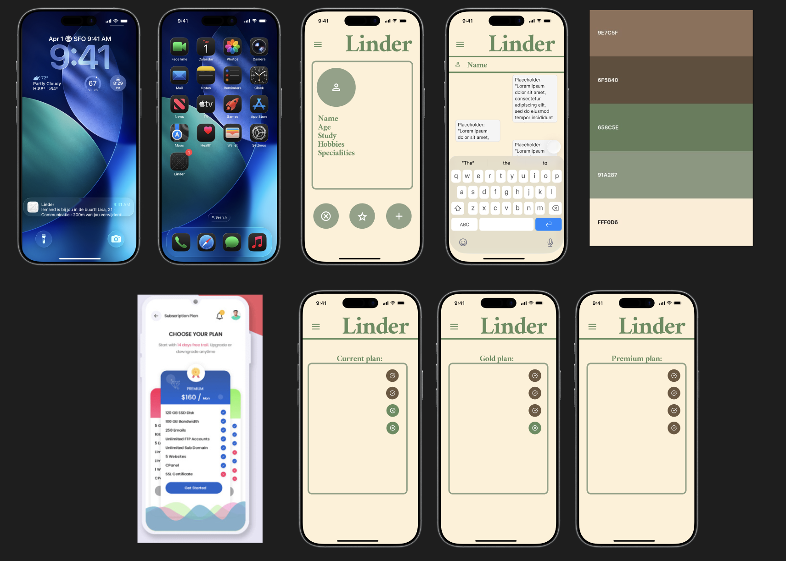
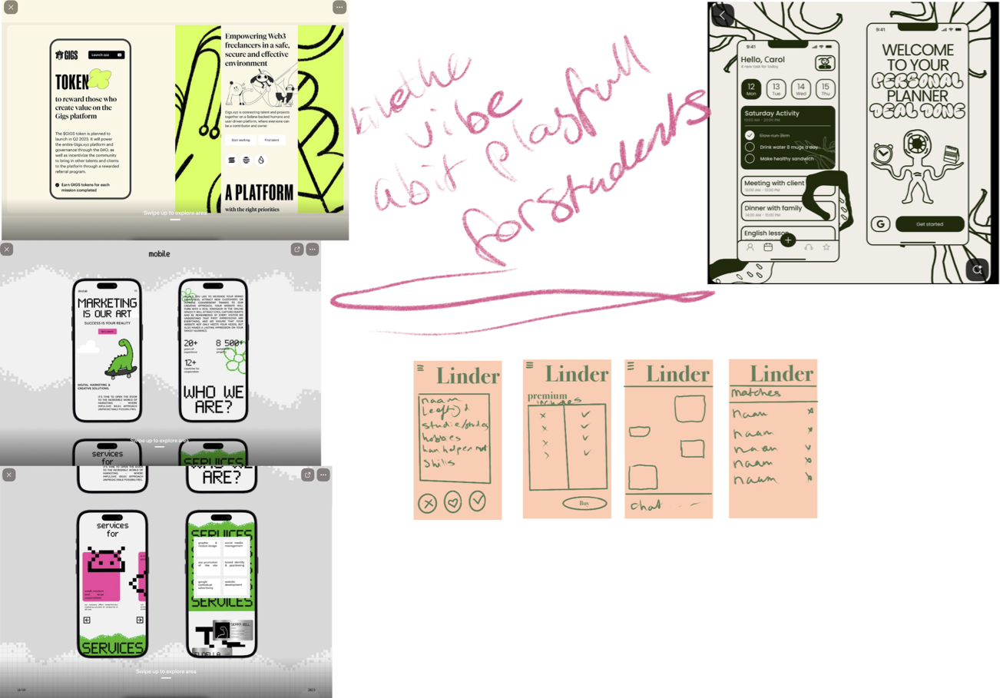

A collection of conceptual studies, design systems, and creative research grounded in a black and pink visual language. This page highlights narrative thinking, interface exploration, and dark-tech aesthetics developed during the minor.
Comprehensive research exploring how features extend beyond their original purpose and the societal risks involved.
Actionable recommendations to mitigate risks identified in the research and guide product decisions.
Concept screens and interaction sketches created to support the recommendations.

